直近1週間の人気フィード
はてなブックマーク数を元に新着優先で並べ替え
Claude Codeをはじめて触るエンジニアのためのざっくり入門 229
229 スタフェステックブログのフィード
スタフェステックブログのフィード
どうも、nano72mknです。Claude Code使ってますか？一年ぶりに復帰した同僚に向けてClaude Codeとは何ぞやというのを簡単にまとめてみたいと思います。ちょうど一年前くらいから一気に盛り上がってきてましたよね...AIの進化は早いもので、少し休んでたら浦島太郎になっちゃいますね。自分もまだまだ使いこなせているとは言えないですが、最初に「これだけ知ってれば十分楽しめるよ」というポイントだけまとめてみました。身構えずにサクッと読んでもらえる感じを目指しています。 Claude Codeって何?雑に言うと、自分のPCに住んでるもう一人のボクかなと思います。...
3日前
【エンジニアの日常】エンジニア達の人生を変えた一冊 Part7 51 Findy Tech Blog
Findy Tech Blog
こんにちは、ファインディでFindy Toolsの開発をしている本田です。 この記事は「エンジニア達の人生を変えた一冊」として、ファインディのエンジニアが人生を変えた本を紹介していくシリーズです。 Part7では、本田・加藤・山田の3名でお届けします。アジャイル開発との出会いになった本、iOSアーキテクチャ設計の答え合わせになった本、AI時代に再読して背筋が伸びた本。3冊それぞれ切り口は違いますが、いずれも自分の中の「開発の判断軸」を作り直してくれた一冊です。 それでは、さっそく紹介していきましょう。 RailsによるアジャイルWebアプリケーション開発 第4版 この本を読んだきっかけ 本の内…
6時間前

Amazon S3 Tablesでつくるアプリケーションログ分析基盤 - CloudWatch Logsからの移行によるコスト最適化 - 48 カミナシ エンジニアブログ
カミナシ エンジニアブログ
カミナシ ID管理基盤ではログストレージにCloudWatch Logsを使っていましたが、サービスの成長に伴いコストに悩んでいました。この記事では、私たちが実践したAmazon S3 Tables（以下、S3 Tables）を使ったログストレージの構築と移行、そのコスト最適化効果について書きます。
5時間前
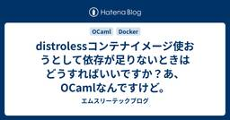
distrolessコンテナイメージ使おうとして依存が足りないときはどうすればいいですか？あ、OCamlなんですけど。 42 エムスリーテックブログ
エムスリーテックブログ
この記事は基盤開発チームブログリレー4日目の記事です。 こんにちは、エンジニアリンググループ基盤チームリーダー兼General Managerの横本(@yokomotod)です。 ありのまま今起こった事を話すぜ…おれは基盤チームブログリレーを走ると思っていたらいつのまにかOCamlブログリレーだった… 何を言ってるのかわからねーと思うがおれも何をされたのかわからなかった…頭がモナドになりそうだった… www.m3tech.blog www.m3tech.blog www.m3tech.blog 3日間、Web・CLI・機械学習と OCaml で攻め続ける先人達により、OCaml デビューする以…
3日前
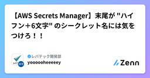
【AWS Secrets Manager】末尾が "ハイフン＋6文字" のシークレット名には気をつけろ！！ 41 レバテック開発部のフィード
背景AWS Secrets Managerにおいて、シークレットの命名に関する少し特殊な「罠」に引っかかってしまったため、備忘録として残しておきます。同じような挙動で数時間を無駄にする方が一人でも減れば幸いです。 忙しい人向けの結論シークレット名の末尾を -secret などの「ハイフン＋6文字」にした場合、IaC（AWS CDKなど）でシークレット名（部分ARN）を指定して参照しようとすると、リソースを見つけられずエラーになる可能性がある。原因: Secrets Managerが、シークレット名の一部を「AWSが自動付与するランダムなサフィックス」だと誤認してしまう...
3日前

AIに個人情報を入れてはいけない、で思考停止していないか 36 CloudNative BLOGs
法人AI、SaaS、クラウド利用は「外部サービスに業務とデータを載せる」経営判断です。個人情報を入れてよいかは、サービス、契約、用途、データ分類だけでなく、得られる効果と受け入れるリスクの妥協ラインとして整理する必要があります。
3日前
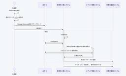
ZEN Study 教材基盤システムを振り返って 11 ドワンゴ教育サービス開発者ブログ
はじめに ZEN Studyは2026年4月にリリースから10周年を迎えました。本記事では、このZEN Studyのバックエンドを支える、特に教材基盤システムの歩みを振り返ります。 焦点とするのは、ZEN Study（旧N予備校）の教材基盤システムが2021年以降に辿った変遷です。この年は、ZEN Studyのバックエンドを構成するマイクロサービスアーキテクチャの中で、教材や進捗の管理をするシステムの改善プロジェクトがバックエンドセクション内で発足した転換期にあたります。 また2023年には、バックエンドセクションから教材基盤の開発を専門とする「教材基盤開発セクション」が独立して発足しました。…
2時間前
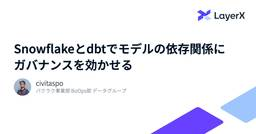
Snowflakeとdbtでモデルの依存関係にガバナンスを効かせる 24 LayerX エンジニアブログ
LayerX エンジニアブログ
この記事では、Snowflake と dbt を使ったデータ基盤で、意図しないデータ参照を防ぐために作った dbt package、dbt-authorized-models を紹介します。
3日前
Claudeと一緒に記事を読むようにしたら日々のインプットがはかどっています 43 レバテック開発部のフィード
これはなにこんにちは、レバテック開発部のもりたです。今回はわたしが普段web記事を読む際に使っているClaude Skillsについてご紹介します。ITのエンジニアって技術の流行り廃りが早かったりして、日々の情報収集を求められますよね。けど実際に記事が読めるかと言われると、あんまり読めないのではないでしょうか。今回はそのつらみを整理してClaudeの助力で解決できつつあるので、ご共有します。構成 構成元々のインプット環境と課題解決策よかったこと課題、解決方法、感想！ シンプル構成でいきます。 元々のインプット環境と課題まずはわたしがどんな環境でなにを読み...
3日前
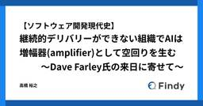
【ソフトウェア開発現代史】継続的デリバリーができない組織でAIは増幅器(amplifier)として空回りを生む 〜Dave Farley氏の来日に寄せて〜 157 Findy Tech Blog
ソフトウェア開発現代史年表Ver2.08 はじめに デリバリーは速ければよいのか 改めて、Four Keysは何を測っているのか 「デプロイ」と「リリース」の混同がFour Keysを遠ざける Dave Farley氏とは 『Continuous Delivery』(2010) は何を変えたか 二つの意味を持つ「リリース」 AI時代に、継続的デリバリーはなぜ重要になるのか AI駆動開発を空回りさせないために 【告知】AI DevEx Conference 2026 - Future of Development Productivity - おわりに はじめに こんにちは。テックブログ編集長の…
5日前
「それ本当にMVP？」 AI時代にプロダクトが巨大化する理由をふりかえる 36 カミナシ エンジニアブログ
「それ本当にMVP？」AI時代にプロダクトが巨大化する理由をふりかえる おはようございます。シャトレーゼに入ったときのいい匂いの根源がなにか気になっている daipresents です。あれ、ほんとなんの匂い？ この1年、AIがとてつもないスピードで進化しており、活用するエンジニアもどんどん進化しているように感じています。 僕は「カミナシ 教育」と「カミナシ 従業員」の2プロダクトにかかわっているのですが、「小さく作ったつもりが、結果的に大きくなっちゃった」というケースが、立て続けでありました。 もしかしたら「AIの登場によって、MVPも巨大になってしまっているのではないか？」と感じたので、ふ…
3日前
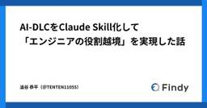
AI-DLCをClaude Skill化して「エンジニアの役割越境」を実現した話 34 Findy Tech Blog
はじめに こんにちは！ファインディのTeam+開発部でエンジニアをしている澁谷（TENTEN11055）です。 普段はチームで Findy Context というプロダクトの開発に取り組んでいます。 prtimes.jp 2025年11月、AWS主催のAI-DLC Unicorn Gymに参加し、AI駆動開発の手法であるAI-DLCを実践しました。 学びはとても大きかった一方で、自分たちのチームにそのまま持ち込むには壁もあり、現場の実態に合わせて作り変える必要がありました。 Unicorn Gym参加時の様子はこちら。 tech.findy.co.jp AI-DLCはAIが作業を実行し、人間が…
3日前
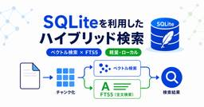
SQLiteを利用したハイブリッド検索対応の軽量RAGの実現 110 Taste of Tech Topics
Taste of Tech Topics
こんにちは、データ分析エンジニアの木介です。 RAG（検索拡張生成：Retrieval-Augmented Generation）では、よくベクトル検索を利用した構成が使われますが、 実務では、業界や企業独自の用語や、IDのような識別子によるドキュメントの特定が必要になることがあり、 このようなケースでは、ベクトル検索だけでは、十分な検索精度が得られない状況があります。 そのような課題を解決するためには、キーワード検索／全文検索を合わせたハイブリッド検索の利用が効果的です。 そこで今回は、SQLiteを利用したハイブリッド検索に対応した、軽量RAGの実現方法を紹介します。 alexgarcia…
5日前
スペック文書を「読みたくなるHTML」に変換するClaude Codeスキルを作った話（スキル本文付き） 27 スペースマーケット Engineer Blogのフィード
こんにちは！スペースマーケットの jin です🐶今回は、仕様書やスペック文書を人間が読みやすいHTMLレポートに変換するClaude Codeスキル「spec-to-readable-html」を作った話を書きます。作った動機、設計で考えたこと、実際に使ってみた結果などをまとめたので、Claude Codeスキルの開発に興味がある方の参考になれば嬉しいです。▲ 今回作成したスキルを使って個人プロジェクトをHTML化したサンプルの一部です きっかけ：「The Unreasonable Effectiveness of HTML」ことの始まりは、Anthropic の Cla...
4日前
CLIツール開発言語として OCaml を使ってみている 60 エムスリーテックブログ
基盤開発チームブログリレー2日目の記事です。 1日目は田尻さんがOCamlについて書いてくれました。そのOCaml熱にあおられ私も仕事で使い始めたので、私も便乗してOCamlについて書いてみます。 www.m3tech.blog 覚醒したラクダ はじめに OCaml、書いてますか。私も書いています。仕事の補助ツールとして。 こんにちは、基盤開発チームの林です。 以前まで、ちょっとしたCLIツールを作る言語としては、簡潔に書ける Ruby を使うことが多かったのですが、最近はAIエージェントをよく使うようになったこともあり、自分用のCLIツール開発には OCaml を使うようになりました。 もと…
5日前
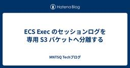
ECS Exec のセッションログを専用 S3 バケットへ分離する 21 MNTSQ Techブログ
MNTSQ Techブログ
はじめに 既存構成 課題感 設計 CloudWatch Logs ではなく S3 に倒す クラスタ単位で S3 prefix を切る 実装 ECS タスクロールに付与する IAM ポリシー ECS クラスタの executeCommandConfiguration おわりに はじめに Amazon Linux 2 (以下 AL2) の EOL (2026 年 6 月 30 日) が近付いてくる昨今、皆様いかがお過ごしでしょうか。 弊社では SSH 踏み台として使う EC2 インスタンスを AL2 ベースで用意し、運用作業の起点として長年取り扱ってきました。運用者はここを経由して ECS タスク…
3日前
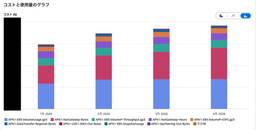
NAT Gatewayの通信内容の分析・通信経路の最適化をしてデータ処理料金を約70%削減した話 59 MNTSQ Techブログ
はじめに SREの寺島です。 MNTSQでは継続的なコスト最適化を進めており、SREチームでもこれまでいくつかの削減施策を実施してきました。本記事では、その中からNAT Gatewayのデータ処理料金の削減に向けた取り組みを紹介します。 結果として、NAT Gatewayのデータ処理料金を約70%削減することに成功しました。今回は、コスト増の原因特定から、具体的な対応、そして効果測定にいたるまでの一連の流れをお届けします。 はじめに まずは Cost Explorer でコストの把握をする NAT Gateway の通信内容を調査する VPC Flow Logs テーブル定義 集計クエリ Ro…
6日前
FastlyからCloudFrontへ段階的移行 ── 無停止で実現したWEAR CDNの刷新 24 ZOZO TECH BLOG
ZOZO TECH BLOG
はじめに こんにちは、WEAR開発部SREブロックの木内です。普段はWEARのSREとして開発、運用に携わっています。 WEARは2013年にサービスを開始し長年オンプレミスで運用されてきましたが、過去にクラウド（AWS）へのシステムリプレイスを実施しています。その際にWebアプリのCDNとしてFastlyを採用し、オンプレミスからクラウドへの段階的な移行を実現しました。 採用の決め手は主に以下の点です。 パスベースのルーティングが可能（パスごとにオンプレミスとクラウドのオリジンを切り替えられる） ネイキッドドメインへの対応 設定変更の即時反映による迅速なロールバック リプレイスの詳細について…
4日前
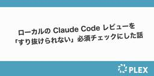
ローカルの Claude Code レビューを「すり抜けられない」必須チェックにした話 33 PLEX Product Team Blog
こんにちは、コーポレートチームの金山です。 今回は、各開発者がローカルで回している Claude Code のレビューを「すり抜けられない」必須チェックにした仕組みを紹介します。 はじめに 私たちが開発しているある社内プロダクトでは、AI レビューの実行コストの都合から、レビューを CI ではなく各開発者のローカル環境で実行したいケースがありました。CI で毎回 AI レビューを回すと従量課金の負担が大きくなるため、各開発者のローカルで Claude Code を実行する運用にしています。 そこで、各開発者が push する前に Claude Code によるセルフレビューをローカルで回すこと…
5日前
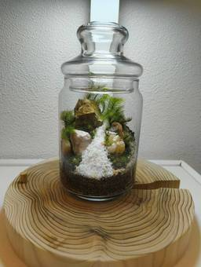
OCaml Web App Development 2026 30 エムスリーテックブログ
【基盤開発チーム ブログリレー1日目】の記事です。 記事とはなんの関係もない自作の苔テラリウム OCaml、書いてますか。私は書いています。仕事として。 そんな話の詳細は今年の関数型まつり 2026 で話すとして、今回は「実際、OCaml で Web やれんの？」という疑問にお答えしようと思います。 実際に利用しているものから、なんとなく良さそうなものまで、Web アプリ開発の文脈で必要になりそうなものをさらっていきます。 この記事を見て、ぜひ、OCaml で Web アプリ開発にチャレンジしてみてください！
6日前
Webディレクターの日常的なAI活用について 28 ぐるなびをちょっと良くするエンジニアブログ
こんにちは。ぐるなびでディレクション業務を行っているManamiです。 最近、生成AIを業務で活用する話を聞く機会が増えました。 私自身もWebディレクターとして日々AIを使っていますが、最も大きく変わったのは「作業時間」よりも、「まず試してみるまでの距離」だったと感じています。 これまでの業務では、 「この確認、もっと効率化できそう」 「この情報、整理できたら便利そう」 「毎回同じような対応をしている気がする」 と思っても、実際にどう改善できるのか考える時間もなく、小さな課題ほど後回しになりがちでした。 しかしAIを使うようになってからは、非エンジニアでも“小さな業務改善”を自分で試せる場面…
5日前
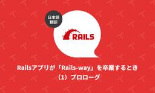
Rails アプリが「Rails-way」を卒業するとき（1）プロローグ（翻訳） 16 TechRacho
TechRacho
概要 原著者の許諾を得て翻訳・公開いたします。 英語記事: Farewell to Rails-way: Prologue 原文公開日: 2026年05月05日 原著者: Paweł Dąbrowski -- Arkencyのシニアスタッフエンジニアであり、『Rails on AWS』の著者です 日本語タイトルは内容に即したものにしました。 本シリーズ記事における"Rails-way"という用語は、著者による再解釈を含んでいることにご注意ください。 Railsアプリが「Rails-way」を卒業するとき（1）プロローグ（翻訳） 私がRuby on Railsを使い始めたのは2010年のことでした。PHP環境からR […]The post Rails アプリが「Rails-way」を卒業するとき（1）プロローグ（翻訳） first appeared on TechRacho.
5日前
モノタロウのフロントエンド刷新の取り組み⑤～6年強のあゆみと学び（技術選定と本番運用のギャップをどう乗り越えるか） 25 MonotaRO Tech Blog
こんにちは。モノタロウでECサイトの開発・運用を担当している辰巳です。 モノタロウではECサイトのフロントエンド刷新に取り組んでおり、その内容をブログで共有したいと思います。 モノタロウのECサイトは1,000万を超えるユーザに利用される事業者向け間接資材ECで、当社のビジネスの中核を担っています。一方でフロントエンドは、長年の機能追加の中でレガシーな技術や独自フレームワークへの依存が進み、設計の異なる複数のシステムを各チームが横断して担当するという、認知負荷の高い構成になっていました。このシステムを刷新するというのが今回お話しする取り組みです。 ここまでのシリーズでは、モノタロウのフロントエ…
6日前
多種多様なサービスを支えるエンジニアグループが「開発生産性の一歩手前」にゆるく楽しく取り組んだ話 15 ぐるなびをちょっと良くするエンジニアブログ
1. はじめに：チームの「コミュニケーション」と「生産性」に悩んだ話 こんにちは！フロントエンド4名、バックエンド4名が所属するエンジニアグループでマネージャーをしている鈴木です。 私たちのグループは全員で1つのサービスを開発しているわけではなく、多種多様な事業のサービスを幅広く担当しています。メンバーそれぞれ異なる文脈、異なるタイムライン、異なるステークホルダーのプロジェクトを並行して進めているのが特徴の一つです。 さらに全員がフルリモート環境のため、どうしても「普段の業務で関わる人が固定化されがちで、チーム間の横串コミュニケーションや知見の共有、全体の目線合わせが難しい」という課題も抱えて…
4日前
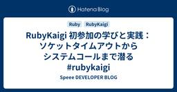
RubyKaigi 初参加の学びと実践：ソケットタイムアウトからシステムコールまで潜る #rubykaigi 21 Speee DEVELOPER BLOG
Speee DEVELOPER BLOG
はじめに こんにちは、Speeeでエンジニアをしている新卒2年目の竹田有真です。今回は RubyKaigi に初参加させていただきましたのでその学びを記事にしました。テーマとして扱わせていただくのは、DAY 3 の塩井美咲さん（@coe401_、以下しおいさん）による発表 "The Less-Told Story of Socket Timeouts" です。正直私はこの発表を聞いている最中、内容を十分に理解できませんでした。帰宅後、しおいさんが Speaker Deck で公開してくださっている発表スライドを元に学ぶうちに少しずつ理解することができました。 本記事の前半ではしおいさんの発表で…
7日前
TanStack Query × Dexie.js で「プロトタイプを全部捨てる」から卒業する境界設計 20 DRESS CODE TECH BLOGのフィード
はじめにこんにちは、Dress Code株式会社でプロダクトエンジニアをしているもず（@mozu1206）です。データ構造やAPI設計までしっかりやる時間はないけれど、ビジネスサイドと「作成・更新・削除まで動く画面」で会話を進めたい場面、ありませんか？AIで雑にプロトタイプを作る選択肢もありますが、本実装に入るときに全部捨てるのは、正直もったいないですよね。この記事では、フロントのみでプロトタイプを作りつつ、API繋ぎ込み時に捨てるコードを最小限にする設計（-api → -query → コンポーネントの3層構造）を紹介します。 TL;DR-api 層にデータのやりとり...
7日前
Claude Code Skills × Bedrockで実現するドメイン特化のPR自動レビュー 5 ZOZO TECH BLOG
はじめに こんにちは、ブランドソリューション開発本部ZOZOMO部FBZブロックの池上 寛登です。2026年3月にZOZOへ入社し、Fulfillment by ZOZO（以下、FBZ）のバックエンド開発を担当しています。 FBZに参画してまず直面したのは、ドメイン知識の壁でした。中でも強く実感したのが、コードレビューの場面です。Pull Request（以下、PR）のレビューには、判断の根拠がドキュメントに載っていない「暗黙知の壁」がありました。既存メンバーの指摘は的確ですが、新規参画者の自分には同じ品質でレビューする難しさがありました。 この課題を解決するために、暗黙知を形式知としてガイド…
3日前
Ruby: Bundler で欲しい機能はまだ他にもある（翻訳） 5 TechRacho
概要 原著者の許諾を得て翻訳・公開いたします。 英語記事: The Missing Bundler Features | byroot’s blog 原文公開日: 2026年04月20日 原著者: byroot -- Railsコアコミッター、Rubyコミッターです 日本語タイトルは内容に即したものにしました。 Ruby: Bundlerで欲しい機能はまだ他にもある（翻訳） ここ数か月ほど、Bundlerを高速化する議論が盛り上がっていました。Bundlerを直接改良する方法や、別言語で再実装する方法の両方について議論されていました。しかし驚く人もいるかもしれませんが、私はBundlerの高速化にはあまりそそられ […]The post Ruby: Bundler で欲しい機能はまだ他にもある（翻訳） first appeared on TechRacho.
4日前
ZOZOTOWN iOSホーム画面リアーキテクチャの軌跡 ── 失敗から学び成長した1年半 17 ZOZO TECH BLOG
はじめに こんにちは、ZOZOTOWN開発1部iOSブロックの荻野です（@juginon）。 みなさんに日々使っていただいているZOZOTOWN iOSアプリのホーム画面ですが、実は2024年秋から2026年の年初まで約1年半、水面下でリアーキテクチャを行っていました。 リアーキテクチャに着手する前の当時の私はアーキテクチャ設計への理解がまだ浅く、「実際に手を動かしながら身につけたい」という動機でこのリアーキテクチャを主導しました。自分にとってはチャレンジングな取り組みで、アーキテクチャ設計やテスト設計への理解が実践を通して大きく深まったプロジェクトになりました。 本記事では、そのリアーキテク…
5日前
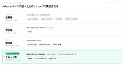
分析を"民主化"しつつ品質を保つAIエージェント基盤「ashura」の設計 16 Mirrativ Tech Blog
1. はじめに はじめまして。データ分析チームの Tom です。 ミラティブでは、施策や新機能の効果測定から、分析基盤の運用、AI エージェントを使った分析業務の効率化までを担当しています。 先日、社内で開催された AI 祭りという取り組みで、ミラティブの分析業務を AI エージェントで回す基盤「ashura」を発表する機会をいただき、ありがたいことに優勝することができました。今回はその ashura について、設計の全体像を紹介します。 ashura は、データ分析の依頼を受けてから報告までを Claude Code 上で完結させるためのエージェント基盤です。本記事のゴールは、AI に分析業…
5日前
GCP Service Account+WIF+DWDでキーレス認証 ~AWS環境からGoogle Driveの情報に安全にアクセスする~ 16 DRESS CODE TECH BLOGのフィード
Dress Code株式会社の蒲生です。DRESS CODEではStorage & Files というプロダクトを開発しています。BoxやGoogle Driveなど企業が利用しているクラウドストレージ 上のフォルダ・共有設定を組織横断で可視化し、リスクのある共有や設定を検知・修正するようなプロダクトです。本記事では、Google Workspace 全社員分の My Drive / Shared Drive を「キーレス + 組織横断」で棚卸しするために、GCP Service Account + Domain-wide Delegation + Workload Id...
6日前
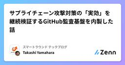
サプライチェーン攻撃対策の「実効」を継続検証するGitHub監査基盤を内製した話 16 スマートラウンド テックブログのフィード
はじめにこんにちは、スマートラウンドの@shonansurvivors です。近年、サプライチェーン攻撃のニュースを目にする機会が増えてきました。弊社でも各種の対策を打ってきたのですが、その「実効」を継続的に保証する仕組みが手薄でした。本記事では、その実効監査のために内製した社内監査基盤の設計思想と、なぜ既存ツールではなく自作したのか、そしてどのようなチェック処理を書いているのかをご紹介します。 要約弊社ではpnpm minimumReleaseAge / GitHub ActionsのSHA pinning / Takumi Guardなど、サプライチェーン対策を段階...
6日前
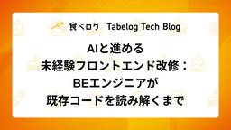
AIと進める未経験フロントエンド改修：BEエンジニアが既存コードを読み解くまで 12 Tabelog Tech Blog
Tabelog Tech Blog
こんにちは、食べログ 飲食店プロダクト開発部 アワード予約チームに所属するジュニアエンジニアの南野です。 今回は、普段ほとんど触れていないフロントエンド領域の既存改修タスクにAIとともに取り組み、どう突破したかという経験をお話しします。 1. はじめに 食べログでは、特定のスタックに限定せずフルスタックに対応できるエンジニアを目指す方針があります。私が所属するチームでも、その方針に沿って「フロントエンドやAPIなど各領域に詳しい社内エンジニアの力を借りなくても対応できる領域を、日々の業務を通じて各自が広げていく」という考え方をチームで共有しており、今回の取り組みもその一環として私が担当したもの…
5日前
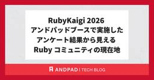
RubyKaigi 2026 アンドパッドブースで実施したアンケート結果から見える Ruby コミュニティの現在地 12 ANDPAD Tech Blog
ANDPAD Tech Blog
こんにちは、Ruby コミッタの柴田 (hsbt) です。最近はプレイするゲームに NTE を追加してしまい、いよいよ早起きする時間を30分繰り上げないとプレイしているゲーム全てのデイリークエの消化が追いつかなくなってきました。 先日の RubyKaigi 2026 では、例年通りアンドパッドはスポンサーとしてブースを出展し、ご当地ランチやドリンクを提供しました。たくさんの方から「これが食べたかった」という声を聞いて、選んだ当事者としては大満足です。 今回のアンドパッドのブースでは、参加者の皆さんに普段の Ruby 開発環境について 7 つの質問に答えていただくアンケートを実施しました。この記…
6日前
Claude Opus 4.8 リリース！コーディング性能向上・Claude Code並列ワークフロー対応 3 サーバーワークスエンジニアブログ
サーバーワークスエンジニアブログ
はじめに サーバーワークスの池田です。 2026年5月28日、Anthropic が Claude Opus シリーズの最新版 Claude Opus 4.8 をリリースしました。前モデルの Opus 4.7 から2か月足らずでの登場で、価格は据え置きのまま全ベンチマークで 4.7 を上回る主力アップデートです。 本記事では、Anthropic の公式発表と移行ガイドをもとに、Opus 4.8 が「モデルとして何が変わったのか」を読み解きます。コーディング性能の伸び、自己検証能力の向上、そして同時に発表された Claude Code の並列ワークフロー機能までを、4.7 との比較を交えてまとめ…
3日前

DCN V2を用いたオンライン推論モデルの検証 3 Wantedly Engineer Blog
Wantedly Engineer Blog
こんにちは。ウォンテッドリーでデータサイエンティストをしている角川(@nogawanogawa)です。この記事では...
4日前
複雑なドメイン領域である給与計算オプションをリリースするまでにやったこと 3 RAKUS Developers Blog | ラクス エンジニアブログ
RAKUS Developers Blog | ラクス エンジニアブログ
はじめに 給与計算オプションの開発で最初に困ったこと なぜ開発部だけでなく事業部にも給与計算の知識が必要だったのか まず、初心者向けの課題図書を選んだ MVP開発に必要な知識に絞って、学習コンテンツを作った 仕様説明では、「なぜその機能が必要なのか」まで説明した リリースまで進めるうえで大事だったこと 1. 自分だけが詳しい状態にしない 2. 開発部・事業部が必要な知識を持てるようにする 3. すべてを学ぶのではなく、今回必要な範囲に絞る 4. 仕様の背景や目的まで伝える まとめ
4日前
効率化の先の「So What?」 Google Cloud Next '26で駆け出しPdMが感じたこと 11 ぐるなびをちょっと良くするエンジニアブログ
こんにちは、駆け出しPdM（プロダクトマネージャー）のこゆいです。 先日、ラスベガスで開催された「Google Cloud Next '26」に参加してきました。 現地で感じたことと、私がこれから目指したい組織・プロダクトの未来について考えたことをつらつらと書いています。 AIを活用して作業を効率化できた…「So What?（で、それを使ってどんな価値を生み出すの？）」
6日前
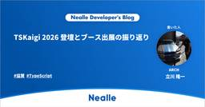
TSKaigi 2026 登壇とブース出展の振り返り 10 Nealle Developer's Blog
Nealle Developer's Blog
はじめに こんにちは、 ARCH チームの立川です。 先日、 2026 年 5 月 22 日(金) 〜 23 日(土)の 2 日間にわたって「TSKaigi 2026」 が開催されました。今回はそのイベントについて、 登壇してきた話 Gold スポンサーとしてニーリーが協賛し、ブース出展をしてきた話 の 2 本立てで書きたいと思います。 登壇について 今回、自分が提出したプロポーザルがめでたく採択され、「TypeScriptとAngular Signal で実現する保守性の高いアプリケーション設計 - 3層アーキテクチャによる責務分離の実践（たつかわ）」というタイトルで登壇してきました。 提出…
5日前
Claude Codeのルールを自動生成し、チームの品質を平準化する 10 ONE CAREER Tech Blog
ONE CAREER Tech Blog
みなさんこんにちは！ワンキャリアでエンジニアをしている佐藤（GitHub：seiya2130）です。今回は、AIによるコーディング支援（Claude Code）をチームで本格的に活用していくにあたり、AIにプロジェクト固有のルールを教え込む（育てる）プロセスを自動化した取り組みについてご紹介します。続きをみる
5日前
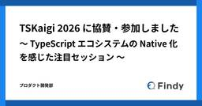
TSKaigi 2026に協賛・参加しました 〜TypeScriptエコシステムのNative化を感じた注目セッション〜 10 Findy Tech Blog
先日、ファインディはベルサール羽田空港で開催された「TSKaigi 2026」に協賛しました。今回はDevRelメンバーとフロントエンドエンジニア3名で参加し、ブース運営を行いました。本記事ではTSKaigi 2026において印象深かったセッションの紹介や登壇、ブース出展などの活動内容を紹介します。ブースで実施したユーティリティ型アンケートの集計結果（480票）も後半で公開していますので、ぜひ最後までお読みください。
6日前
Agent Skillsを徹底解説！ 9 G-gen Tech Blog
G-gen Tech Blog
G-gen の福井です。当記事では、AI エージェントツールに専門知識やワークフローを追加するためのオープンフォーマットである Agent Skills について、概念や動作の仕組み、スキルの構造、使い方などを解説します。 概要 Agent Skills とは Skills が可能にすること Skills の実体 Agent Skills の仕組み 基本的な動作 コンテキスト肥大化の防止 Skills と MCP の関係 Skills の構造 ディレクトリ構成 SKILL.md の中身 使い方 対応ツール Skills ファイルの配置場所 インストール Gemini CLI からスキルを呼び出…
5日前
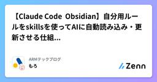
【Claude Code ✖Obsidian】自分用ルールをskillsを使ってAIに自動読み込み・更新させる仕組みを作ってみた 4 ARMテックブログのフィード
はじめに「LLMへの同じ指摘にげんなりしているこの頃」こんにちは！株式会社アドバンテッジリスクマネジメント（ARM）でフロントエンド開発担当のもろです。プリンは固めが好きです。社内ではClaude Codeが導入されており、開発作業の効率化を推奨されています。私自身自社サービスの開発はもちろん、社内向けのツール開発など、複数のプロジェクトを担当しています。そのなかで、プロジェクトごとの業務フローや参照ファイルなど、Claude Code に毎回共有しなければならない情報が増えていきました。さらに、そうしたルールや前提を整理・管理する手間にも不満を感じていました。今回は、そ...
4日前
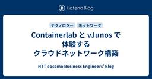
Containerlab と vJunos で体験するクラウドネットワーク構築 4 NTT docomo Business Engineers' Blog
NTT docomo Business Engineers' Blog
Containerlab と Juniper の無償仮想イメージ vJunos を使用し、データセンターネットワーク（NW）の定番アーキテクチャ「Leaf-Spine 構成」をゼロから構築するハンズオン記事です。eBGP による Underlay 構成を皮切りに、EVPN/VXLAN によるテナント L2 拡張、ESI-LAG を用いた冗長化、VRF Route Leaking によるインターネット接続ゲートウェイ模擬まで、クラウド NW の中核技術をひと通り体験できます。ハードウェア不要・無償イメージのみで動く手順と全設定例を掲載しています。 はじめに 前提知識 全体像 構築するトポロジ ポ…
4日前
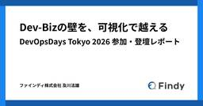
Dev-Bizの壁を、可視化で越える — DevOpsDays Tokyo 2026 参加・登壇レポート 4 Findy Tech Blog
こんにちは、ファインディのCTO室でスタッフエンジニアを担当している及川(@rojoudotcom)です。 4月14日(火)〜16日(木)にDevOpsDays Tokyo 2026が開催されました。本記事は、スポンサー登壇者として参加してきたレポートです。 DevOpsDaysは、世界各地で開催されるエンジニア向けの国際カンファレンスです。 開発（Dev）と運用（Ops）の連携、自動化、組織文化、最新の事例やプラクティスを発表しています。日本ではDevOpsDays Tokyoとして、年に1回開かれています。 本記事では、開発組織の成果を経営層にどう伝えたらいいのかを悩まれている方や、AIを…
4日前
状態を直接編集する台帳UIをやめたら、Event Sourcing的な発想にたどり着いた 4 DRESS CODE TECH BLOGのフィード
はじめにこんにちは。Dress Code 株式会社でプロダクトエンジニアをしている西銘です。DRESS CODEにはデバイス台帳画面があります。数あるプロダクトの中でも初期から作られ、使われてきただけに業務知識は詰まっている一方で、機能を追加するたびに別の潜在不具合が見つかる状態でした。直しても別の場所で似た問題が出るので、開発側も利用側も消耗しやすくなっていました。最初は「使いづらい UI をどう改善するか」という話だと思っていました。ですが掘っていくと、見た目や操作感よりも、現在の状態を直接編集する前提のデータ設計が実際の業務の流れとズレていることが問題でした。この記事...
5日前
TSKaigi 2026 協賛・参加レポート 6 ROUTE06 Tech Blog
こんにちは！ ROUTE06 の技術広報Bです。 2026 年 5 月 22 日（金）・23 日（土）にベルサール羽田空港で開催された TSKaigi 2026 に、ROUTE06 はスポンサーとして協賛し、弊社エンジニアの @NoritakaIkeda が登壇しました。そのレポートをお届けします！ TSKaigi 2026協賛背景 ROUTE06 は 2024 年、2025 年に続き、今年も TSKaigi へ協賛しました（Bronze スポンサー）。私たちは Acsim をはじめとするプロダクト開発に TypeScript を活用しており、TypeScript コミュニティへの貢献を目的と…
7日前
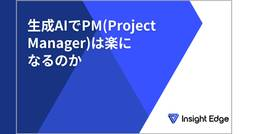
生成AIでPM(Project Manager)は楽になるのか 5 Insight Edge Tech Blog
― 作業は減るが、判断力は求められ、責任はより重くなる ― 目次 はじめに 生成AIによって、PMの「作業」は確かに減る むしろ、判断は難しくなる 負荷は「作業」から「認知」と「判断」に移る 生成AI時代に、PMが磨くべきもの 1. 論点を設定する力 2. 優先順位を付ける力 3. 出力を疑う力 4. 判断を引き受ける力 おわりに はじめに こんにちは。Insight EdgeでPM業務をしている小林です。 今回は、「生成AIの活用によってPM業務は楽になったのか」というテーマで整理してみます。 ※本記事は著者の個人的な経験と見解に基づくものであり、Insight Edgeとしての公式な見解で…
5日前
関数合成と契約プログラミングで立ち向かう、カオスにならない SSR 実装 3 pixiv inside
pixiv inside
こんにちは。 ピクシブ百科事典の開発をしております、フロントエンドエンジニアの ahu です。 ピクシブ百科事典 は、「みんなでつくる百科事典」を合言葉に運営されている、オンライン百科事典サービスです。 今回は、百科事典の Next.js の根幹を支える SSR の仕組みを紹介します。 百科事典は Pages Router で実装されており、getServerSideProps という関数でデータを集めて React のコンポーネントに渡します。 そのため、getServerSideProps の実装では必然的に複数のドメインロジックを扱うことになり、素朴に書くとカオスになりがちです。 今回は…
5日前

金融庁・日銀「フロンティアAIによる脅威変化を踏まえた金融機関等の短期的な対応」要請で何をしたら良いのか 4 CloudNative BLOGs
金融庁・日本銀行が公表したフロンティアAI対応要請を一次情報から解説します。CVSSは否定されたのか、EPSS・SSVC・CISA KEVをどう使うべきか、AISI評価とAnthropic CVDの数字を踏まえて読み解きます。
5日前
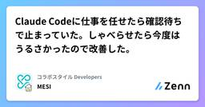
Claude Codeに仕事を任せたら確認待ちで止まっていた。しゃべらせたら今度はうるさかったので改善した。 3 コラボスタイル Developersのフィード
最近はClaude Code に作業を任せて、自分は別のタスクを進めて並行作業をすることが多いです。しかし実際にやっていると、自分のタスクが終わってからClaude Code に戻ったら確認待ちで止まっていたという悲しい事件が何度か発生しました。気づけばずっと待ち続けていたわけです。作業を任せた意味よ……。そこで見つけたのがClassmethodさんのこの記事 。https://dev.classmethod.jp/articles/claudecode-hooks-notify/Claude Code の Hooks 機能を使って、入力待ちや完了になったら音声で教えてくれる仕...
6日前